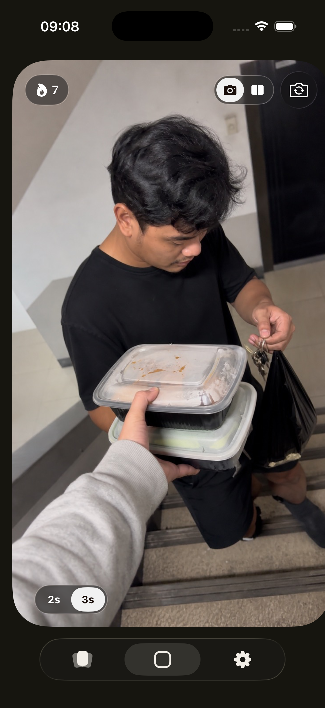
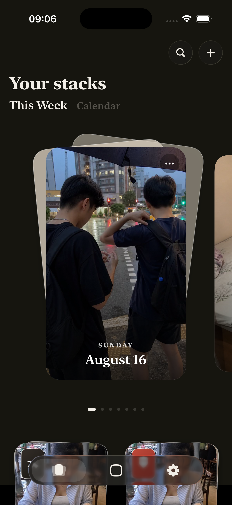

2 or 3 seconds.
That's enough.
A camera for the small but memorable moments.
Join the TestFlight betaFor iPhone · Free beta through Apple's TestFlight app
A little look inside
Small moments. Your stacks.
Capture a few seconds. Come back to the days you want to keep.

Two seconds or three. Keep it simple.

Flip through your moments, one stack at a time.